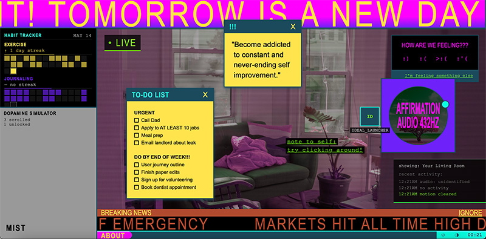

IDEAL

The messy interface style can be a good inspiration for a detective theme narrative. Being able to drag around notes might be a good interactivity for my narrative allowing the user to organize the information that they have. The overall experience is a little horror-ish and gives a dystopian energy.